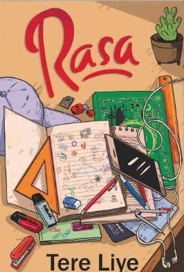

| No |
Gambar |
Deskripsi |
Rating |
| 1 |
 |
Novel "Rasa" karya Tere Liye mengisahkan tentang berbagai jenis rasa yang dialami tokoh utamanya, Lin, seorang siswi SMA. Cerita ini berpusat pada perjalanan Lin dalam menemukan jati diri, berdamai dengan masa lalu, dan menghadapi kompleksitas hubungan persahabatan, keluarga, serta cinta.
|
Saya kurang menikmati novel ini karena ceritanya terasa klise, terutama dengan tema percintaan segitiga dan konflik yang mudah ditebak. |
| ★★★☆☆ |
| 2 |
 |
Novel "Laut Bercerita" karya Leila S. Chudori mengisahkan tentang tragedi penculikan aktivis mahasiswa pada tahun 1998 di Indonesia. Novel ini menyoroti kisah Biru Laut, seorang aktivis yang hilang, dan perjuangan keluarganya dalam mencari kebenaran serta menghadapi dampak kehilangan. |
Menurut saya, Laut Bercerita adalah novel yang sangat mengena. Ceritanya emosional, penuh makna, dan membuka mata tentang sisi sejarah yang jarang dibahas. Gaya penulisannya juga kuat dan menyentuh. |
| ★★★★★ |
| 2 |
 |
Serial Bumi adalah seri novel fantasi karya Tere Liye yang menceritakan petualangan tiga remaja, Raib, Seli, dan Ali, yang memiliki kekuatan unik dan berasal dari klan yang berbeda di dunia paralel. Mereka harus menghadapi berbagai tantangan dan bahaya untuk menyelamatkan Bumi dari ancaman klan jahat. |
Saya sangat menikmati Bumi Series. Ceritanya mengalir dengan baik, dunia fantasinya menarik tapi tetap mudah dipahami. Karakternya juga punya perkembangan yang jelas. Meski bergenre fantasi, tetap ada banyak hal yang terasa dekat dan bermakna. |
| ★★★★★ |